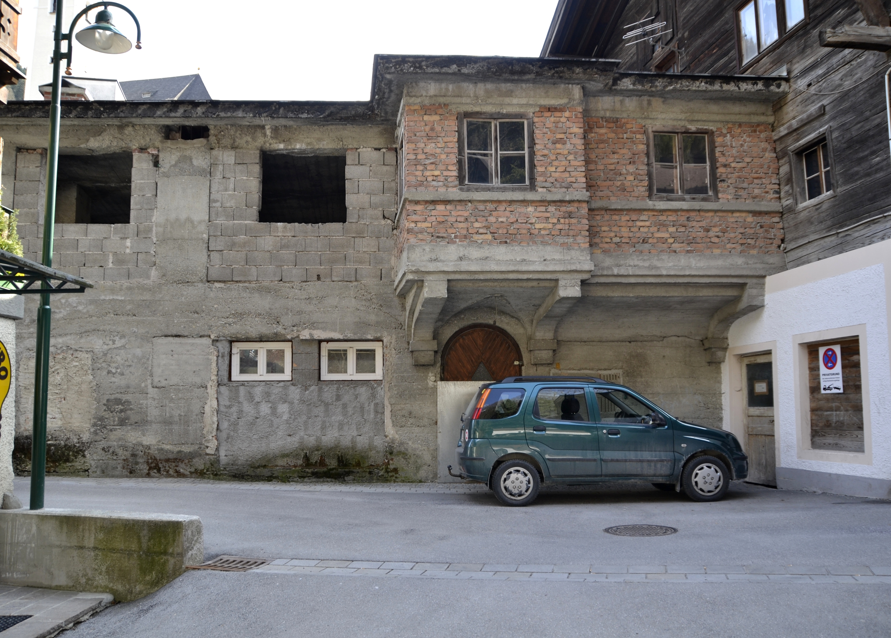

Situated in recently rennovated Old Town, our Snooze Cubes in the Cisco Toyato Jackie Chan center, are perfectly located for all your tourist needs.
Pods come pre-equipped with selfie technology to live stream your nap to your your dozen of Instagram followers.
Ten minutes from the beach, five minutes Old Old Town.
East West Burg
Our Snooze Cubes in East West Burg (formerly West East Burrow) are perfect for the professional at the end of their wits.
Visit us to stave off the innevitable mental breakdown months in the making. Our cubes here are specially equipped to handle abuse; physical and emotional.
Our patent pending insulating cubes allow our Royalty Members to scream wordless cries into the void, without damaging carefully crafted social images.
The Bad Part of Town

Nap in a a little piece of history. Our location in The Bad Part of Town is a genuine former Meth Den, with more than 70% of the original wall stains meticulously maintained.
This location is uniquely located one street down from the Bullevard of broken bottles, the critically acclaimed bar run as seen on Better Benders R'Us
All of our pods at this location are hyper-sanitary, made with non-stick materials, and comes pre-equipped with hair-holding technology.